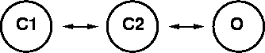

Note: The conductance data (indicated by red lines through the open circles) is in the file hh508.dat with the ascii format:
A sequence of 12 lines each with the form
voltage_label number_of_time_points t g ...The hh508.hoc file plots this data in NEURON. The Graph with the single line is the steady state conductance vs clamp potential and includes an additional point at 0.
A/(1 + exp(k1*(d1 - v)) + exp(k2*(d2 - v))) A=22 k1=0.2 d1=21 k2=0.036 d2=43by using the MultipleRunFitter (You are encouraged to set it up from scratch from the Multiple Run Fitter item in the NEURONMainMenu / Tools / Fitting menu. Here's how and here is an example of one that is complete.)
This suggests that it might be sensible to construct a three state kinetic model of the potassium conductance.

It remains to relate the voltage dependent rate constants to the Boltzmann factors and this can be done by noting that in the steady state the equilibrium constants and Boltzmann factors are related by: (Note that the 3 state distribution is O/(O + C2 + C1) )
Kc2o = O/C2 = exp(-Eo/kT) / exp(-Ec2/kT) Kc1c2 = C2/C1 = exp(-Ec2/kT) / exp(-Ec1/kT) (Eo - Ec2)/kT = k1*(d1 - v) (Eo - Ec1)/KT = k2*(d2 - v)and therefore there are only two velocity factors available to fit each time course since the voltage dependence of the equilibrium constants is completely determined by the steady state conductance data.
KINETIC kin {
rates(v)
~ c1 <-> c2 (a1, b1)
~ c2 <-> o (a2, b2)
CONSERVE c1 + c2 + o = 1
}
but there is a lot of scaffolding to make it work. The complete mod file
is k3.mod which is located in your
course/hh3st directory.
Verify that the units are consistent. Here's how
Verify that the mod file fits the steady state k conductance data. Here's how.
Find the best values of tau1 and tau2 which fit one of the conductance vs time curves. You'll find that three states don't do a very good job. Why this is a hard exercise. Here's how.
Complete the model by fitting the parameters governing the voltage dependence of tau1 and tau2. (I.e. ta1, tk1, ta2, tk2). Here's how.
Compare the action potential generated by the default hh channels to the action potential that results from substituting the khh model in place of the hh potassium channel. Here's how.